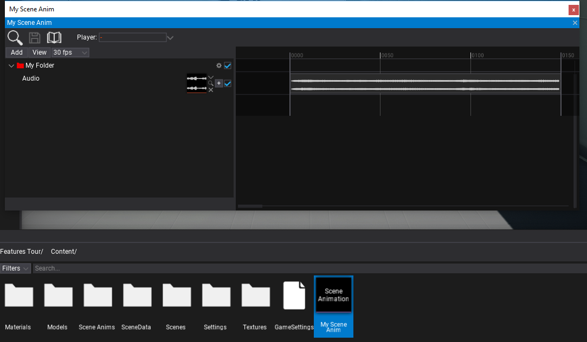

HOWTO: Create Scene Animation From Code
In the following tutorial, you will learn how to create scene animation asset from C# script. To learn how to create scene animation see this page.
This code works only in Editor and is intended to be used by game tools code such or editor plugins to generate cut-scenes or dialog sequences. It can be used to automate dialogs/cut-scenes development.
Tutorial
1. Create script that generates the scene animation
using System.IO;
using FlaxEditor;
using FlaxEditor.GUI.Timeline;
using FlaxEditor.GUI.Timeline.Tracks;
using FlaxEngine;
public class TestScript : Script
{
public AudioClip Audio;
public override void OnStart()
{
#if FLAX_EDITOR
// Create timeline from code
var timeline = new SceneAnimationTimeline();
// Add folder track
var folderTrack = (FolderTrack) timeline.AddTrack(FolderTrack.GetArchetype());
folderTrack.Color = Color.Red;
folderTrack.Rename("My Folder");
// Add audio track
var audioTrack = (AudioTrack) timeline.AddTrack(AudioTrack.GetArchetype());
audioTrack.Asset = Audio;
audioTrack.ParentTrack = folderTrack;
// Serialize timeline data to bytes
var data = timeline.Save();
// Save data to asset file
var path = Path.Combine(Globals.ProjectContentFolder, "My Scene Anim.flax");
Editor.CreateAsset(Editor.NewAssetType.SceneAnimation, path);
var sceneAnimation = Content.Load<SceneAnimation>(path);
sceneAnimation.SaveTimeline(data);
// now use created sceneAnimation..
#endif
}
}
2. Add script and run it
Add script to actor and play. You can use this code in editor plugin or custom editor window.
3. See the results
Now there should be My Scene Anim asset in your game Content folder. Open it and see the created scene animation.
